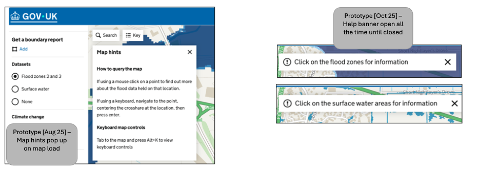
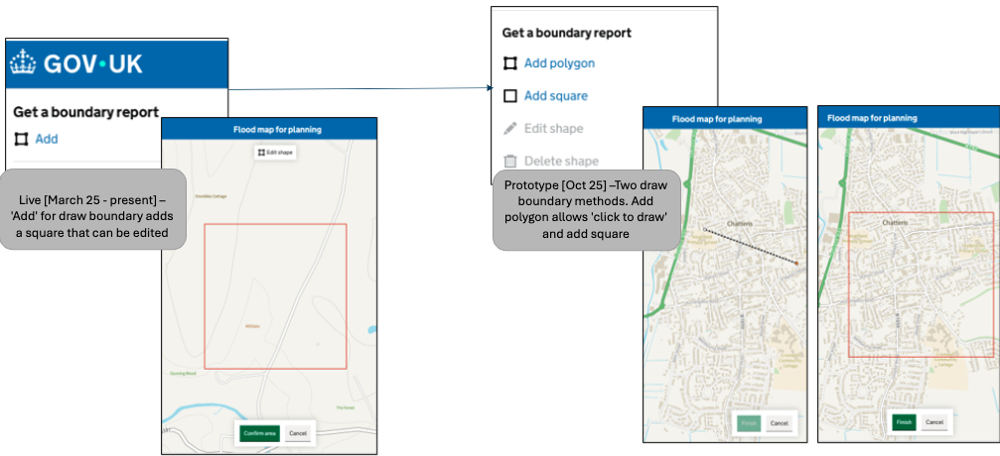
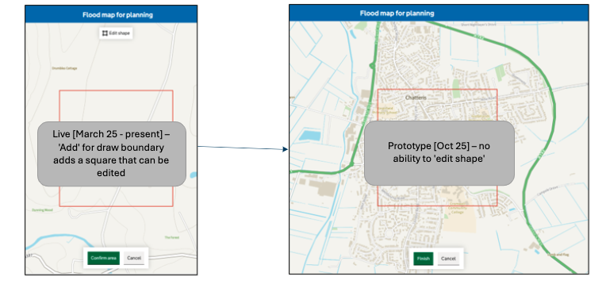
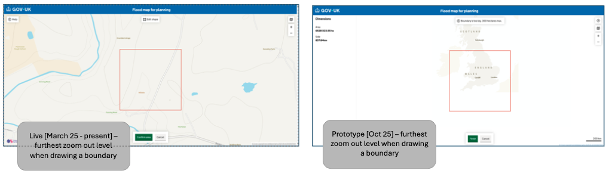
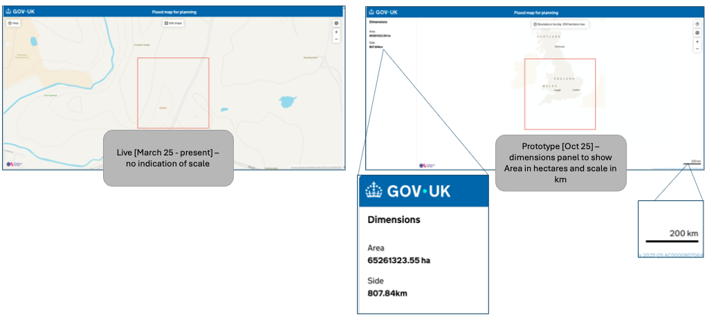
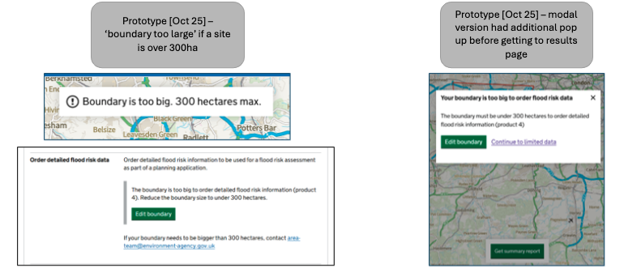

Published
User research round testing polygon boundary drawing, help banner design, and map scale controls.
It is an ongoing theme that users do not realise that they can click on the flood extents to find further information. In August 2025 we introduced a Map hints pop up, however testing revealed that most users closed this before reading it. Here we test a 'help' banner instead.

March 2025 – 'Add' for draw boundary adds a square that can be edited. October 2025 – Two draw boundary methods. Add polygon allows 'click to draw' and add square option.

Square boundary live since March 2025 is editable by clicking 'edit shape', nodes then appear which can be moved. The square boundary tested in October 2025 remains square. User can pan and zoom to select the area they want.

Previously to limit the size of boundary users could draw, they could only zoom out so far. This has been relaxed because we implemented a new method to handle large boundaries.

March 2025 – no indication of scale. October 2025 – dimensions panel to show Area in hectares and scale in km shown via a scale bar.

Previously zoom level was used to artificially limit how big a boundary could be. But people were finding ways around this. Now if a boundary is over 300ha a banner will appear and they can't order a P4 via the website. We also tested a 'modal pop-up' that provides more information before people get to the results page.

{% endblock %}